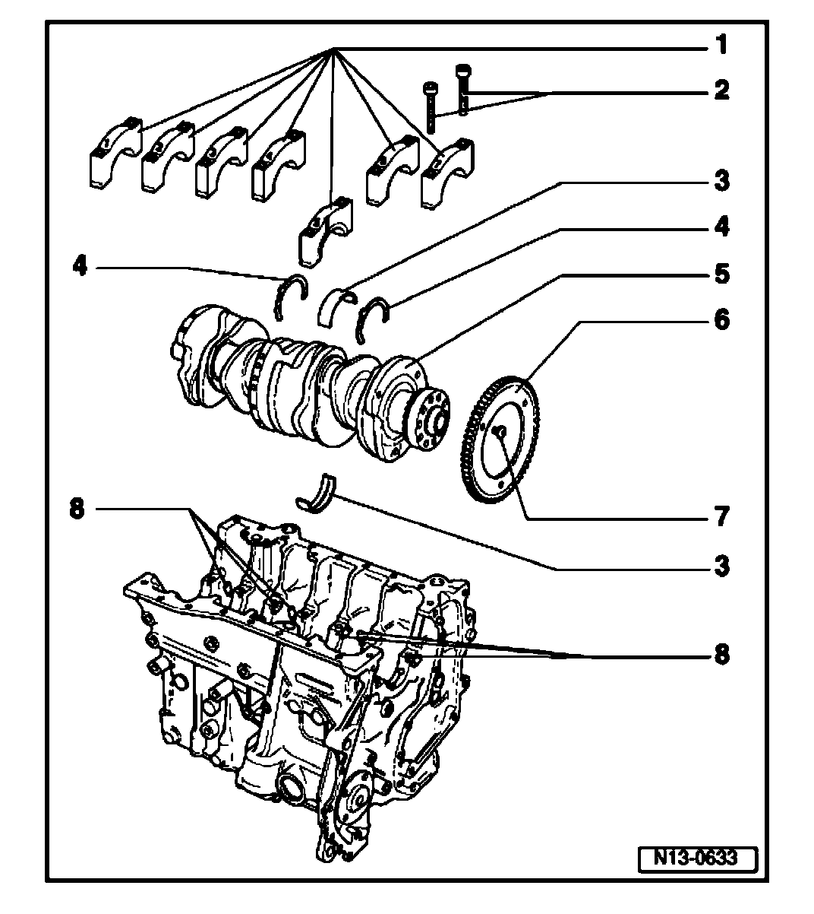
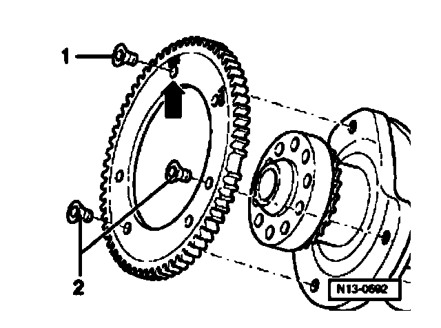

Crankshaft, Removing and Installing
Crankshaft, removing and installing
Note:
^ Before removing the crankshaft, prepare a suitable place to store the crankshaft to make sure that the sensor wheel (item. go to Item - 6 - ) does not make contact or become damaged.
^ When performing assembly work, secure the engine with the engine support 3269 on the assembly stand.
^ When changing bearing shells ensure that bearing shells with the same color code are used.

1. Bearing cap
^ Bearing cap 1 - Vibration damper end
^ Bearing cap 5 with recesses for thrust washers
^ Bearing shells retaining tabs (cylinder block/bearing caps) must lie above one another must be on the same side
2. 30 Nm plus an additional 180° (1/2 turn)
^ Replace
^ 2 x 90° turns further is permissible
3. Bearing shells 1 - 7
^ For bearing cap without oil groove
^ For cylinder block with oil groove
^ Do not interchange used bearings (mark)
4. Thrust washer
^ For bearing cap 5
^ Observe locating point
5. Crankshaft
^ Axial play new: 0.07 - 0.23 mm, Wear limit: 0.30 mm
^ Check radial clearance with Plastigage 0.02 - 0.06 mm, Wear limit: 0.10 mm
^ Do not turn crankshaft when measuring radial play
^ Crankshaft dimensions - Main bearing- 59.958 - 59.978 mm, Connecting rod bearing: 53.958 - 53.978 mm reworking is not permitted
6. Sensor wheel
^ For Engine speed (RPM) sensor G28
^ Replace Installing go to 13-3, Installing sensor wheel to crankshaft
7. 10 Nm plus an additional 90° (1/4 turn)
^ Replace
8. Oil spray jet
^ For crankshaft bearing 2... 7
^ For piston cooling
^ Opening pressure 2.0 bar pressure

Installing sensor wheel to crankshaft
Special tools, testers and auxiliary items required
^ Torque wrench (5... 50 Nm) V.A.G1 331
^ Locking fluid D 000 600 A2
Work procedure
Make sure crankshaft/sensor wheel contact surfaces are free of oil and grease.
- Apply a thin coat of locking compound D 000 600 A2 to contact surfaces of crankshaft and sensor wheel for additional hold.
- Check that when installing "VR6" - arrow - is marked at individual threaded holes.
- Tighten all new securing bolts lightly by hand.
- Tighten securing bolt - 1 - to 10 Nm + 1/4 turn. (90°)
- Tighten securing bolts - 2 - to 10 Nm + 1/4 turn. (90°)